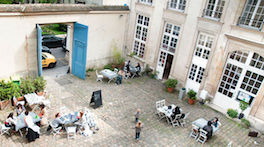

Portfolio
Find out what I've been up to:
DossierSCO, enabling online registering for secondary school
Role: UX researcher and content designer.
Status of the team and project: setting up for a round of recruiting for year 2 of this product. Focus on acquisition. Grooming the team to accomodate distributed collaborators.
- Elaboration of communication texts suited to multiple uses ('About' page, emails, newsletters, etc.)
- Short video teaser to demo the product (for families and for schools)
- Introduction of mixed methods research: discussions on key metrics and how to collect them, qualitative research (recruiting, interview guides, interviews and shadowing)
- Pairing with a designer for a UI overhaul.
Mind the Gaps - An open toolbox to measure wellbeing and inequalities
Researcher on this project whose mission was to explore innovative data collaborations between France and the UK.
Twin cities Bristol and Bordeaux face similar challenges and deploy different strategies: partnerships with community organisations, neighbourhood officers...
This toolbox offers an exploration of citizen participation in the "smart city". It suggests a blend of methods to provide rich insights, connect and enable citizens.
Made by many - Product-led transformation
 Associate Product Manager within this product design and transformation agency.
Associate Product Manager within this product design and transformation agency.
Experience working with small, agile cross-functional teams on a variety of projects (encompassing behavioural economics and an IoT project).
Focus on qualitative and quantitative research, prioritisation and planning, documentation...
369 éditions - Launch of a hybrid publishing house
 Communications strategy for this publishing house specialised in the collaboration between designers and storytellers on various formats: books (manuals, experimental literature), objects (3D-printed ceramics) and talks.
Read on about my involvement in the launching of the project.
Communications strategy for this publishing house specialised in the collaboration between designers and storytellers on various formats: books (manuals, experimental literature), objects (3D-printed ceramics) and talks.
Read on about my involvement in the launching of the project.
Arte Push - Extension for Franco-German media
 Content management of an extension conceived at Arte Playground hackathon (third prize) to offer Franco-German powerhouse Arte's programs on 3rd-party websites and users’ daily web routines.
Content management of an extension conceived at Arte Playground hackathon (third prize) to offer Franco-German powerhouse Arte's programs on 3rd-party websites and users’ daily web routines.
More information
I was enrolled in Social Builder's career acceleration program for women in tech.
La Gaîté lyrique - An Arts and Technology Space
 Digital communications strategy from 2013 to late 2016.
Digital communications strategy from 2013 to late 2016.
Editorialisation and transformation of the website, production and commission of content, email marketing, tailored and topical copywriting and content for this digital cultures space.
Find out more about this through a few case studies.
La Galerie des Galeries - Exhibition space of the Galeries Lafayette
 Communications and coordination for this art space situated within the Galeries Lafayette which hosts exhibitions and special events.
Communications and coordination for this art space situated within the Galeries Lafayette which hosts exhibitions and special events.
Print, digital and PR campaigns in collaboration with curators, artists and agencies.
Find out more about this project.
The Swedish Institute - Cultural centre

Communications assistant.
Creation of social media pages and their strategies, events, PR and marketing campaigns.
Production assistant on the Swedish independant music ÅÄÖ Festival.
Visit their website